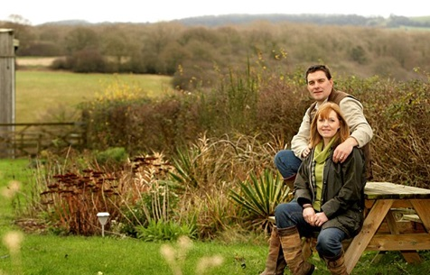
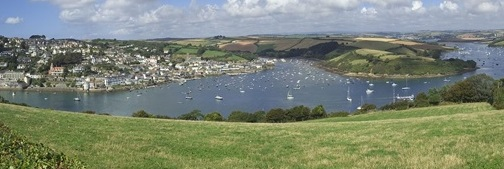

Matthew and Sandra
We are a young couple who purchased Wildland cottage in 2001. We moved to Kingsbridge to get away from the city life of London which was expensive and crowded. We both took a year out of working to renovate the cottage making it modern, yet still leaving some of the cottage like feel. We lived in the cottage for 10 years during which we had two children who loved the cottage and enjoyed the small stream which connected to Bowcombe Creek.
The cottage has the following:
A master bedroom on the third floor
A standard double bedroom
A twin bedroom which has two singles
A downstairs bathroom
An upstairs bathroom with old style bath tub
A large kitchen with dining area and small living area attached
A large living room with large corner sofa, fire place and 43inch TV
A small living/quiet study area

Panoramic photo of Kingsbridge
In 2011, after spending more time updating the kitchen and two bathrooms, we decided to move to a larger home on the other side of Kingsbridge.
The rooms were restored to their homely cottage feel, and a larger wood burning stove which connects to the central heating was also installed in the large living room. Due to a surplus of fire wood in the area, we made sure that fire wood was always free and easy to access for visitors to the cottage. We also built a boat storage shed next to the stream, and provide those that hire the cottage, canoes and other equipment.
With the cottage now being over one hundred years old, deciding to hire the cottage out to people was the best decision we made, as it now allows people to have the experience of living in such an old but beautiful home, just like we did until 2011.